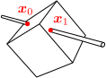
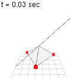

12.拘束された剛体

この章のシミュレーション（クリックで計算開始）：
剛体に拘束条件を加える場合、固定点を基準にとるのがよい

拘束された剛体の運動を計算したい。例えば右図のように、剛体上の1点
前章で扱った自由な剛体の場合、剛体の基準点（
運動方程式が得られれば、解き方は、前章と同じである。この章では、1点を固定する場合と2点を固定する場合について、それぞれの節で議論を行う：
点 を 固 定 し た 剛 体 点 を 固 定 し た 剛 体
12.11点を固定した剛体
運動方程式：式(
剛体上の1点
- [1] 質点要素の速度
- [2] 運動方程式から拘束力
- [3] 慣性モーメントとトルクを用いた形に変形する。
[1] 第10章で見たように、質点要素の速度
[2] 拘束力
[3] 後は、式(
運動方程式(
求めたかった運動方程式(
【12.1-注2】慣性モーメントとトルクの変換公式（平行軸の定理）
任意の点
導出
第1式：
の 次 の 項 の 次 の 項 は よ り 、 消 え る こ と が 分 か る
第2式：
【例題】重力下における、固定点を持つ剛体の運動方程式：式(
例題として、外力として重力が働いている場合を考える。
剛体として三角錐の頂点に質量が集中しているようなものを考え、その頂点を固定して数値計算を行うと、右図のようになる。三角錐の底面の一辺が
12.22点を固定した剛体
剛体上の固定点
運動方程式：式(
固定点
式(
2点を固定する場合は、自由な座標として自然なもの、即ち、軸周りの回転角
まず、
【例題】重力下における、固定軸を持つ剛体の運動方程式：式(
次に、モデル位置（

前節のものと同じ剛体を用いて数値計算を行うと、右図のようになる。